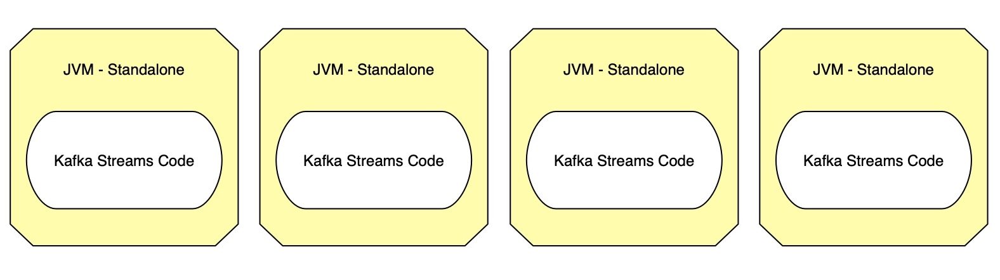
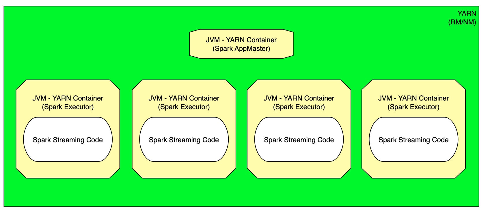
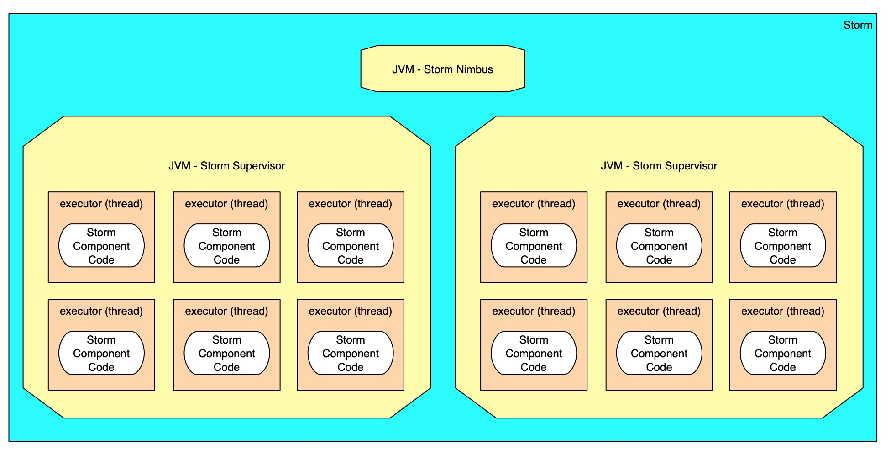

topology supervision features of streaming frameworks (or lack thereof)
2019-03-21 · Lester Martin
This blog post introduces the three streaming frameworks that are bundled in the Hortonworks Data Platform (HDP) – Apache Storm, Spark Streaming, and Kafka Streams – and focuses on the supervision features offered to the topologies (aka workflows) running with, or within, these particular frameworks. This post does not attempt to fully described each framework nor does it provide examples of their usage via working code.The goal is to develop an understanding of what, if any, services are available to help with lifecyle events, scalability, management, and monitoring.
The Frameworks
Kafka Streams
Kafka Streams is a client library for building applications and microservices, where the input and output data are stored in Kafka clusters. It combines the simplicity of writing and deploying standard Java and Scala applications on the client side with the benefits of Kafka's server-side cluster technology. –http://kafka.apache.org/documentation/streams/
Kafka Streams are tightly coupled with Kafka’s messaging platform; especially the streaming input data. Kafka Streams is intentionally designed to fit into any Java or Scala application which gives it plenty of flexibility, but offers no inherent lifecycle, scaling, management, or monitoring features.

Spark Streaming
Spark Streaming is an extension of the core Spark API that enables scalable, high-throughput, fault-tolerant stream processing of live data streams. Data can be ingested from many sources like Kafka, Flume, Kinesis, or TCP sockets, and can be processed using complex algorithms expressed with high-level functions like map, reduce, join and window. Finally, processed data can be pushed out to filesystems, databases, and live dashboards. –http://spark.apache.org/docs/latest/streaming-programming-guide.html
Apache Spark’s streaming frameworks allow for a variety of input and output data technologies. Spark Streaming apps are themselves Spark applications who, in a Hadoop cluster at least, run under YARN which provides coverage for many of the lifecycle and management features. The Spark framework addresses a number of the scaling and monitoring needs.

Apache Storm
Apache Storm is a … distributed realtime computation system. Storm makes it easy to reliably process unbounded streams of data, ... Storm is simple, can be used with any programming language, … Storm is fast: a benchmark clocked it at over a million tuples processed per second per node. It is scalable, fault-tolerant, guarantees your data will be processed, and is easy to set up and operate. –http://storm.apache.org/
Storm topologies are assembled with components that can be built with any language, but primarily Java is used. It includes ready to use components for many queueing and database technologies. Storm is a comprehensive framework that solely focuses on streaming applications and has rich solutions addressing lifecyle events, scalability, management, and topology monitoring.

Feature Analysis
Kafka Streams
Spark Streaming
Apache Storm
Lifecycle Events
Start
RYO
Submitter
Submitter
Stop
RYO
Patterns available
Available
Pause/Restart
RYO
Not available
Available
Scalability
Initial Parallelization
RYO
Parameterized
Parameterized
Runtime Elasticity
RYO
Auto-scaling based on properties for min/max number of executors
No auto-scaling but each component can be scaled +/- individually
Management
Resource Availability
No inherent resources
Managed
Managed
Failure Restart
RYO
Automatic
Automatic
Monitoring
Topology UI
RYO
Combined with all Spark jobs
Centralized
Integration
RYO
JMX
JMX
Summary & Recommendations
Let me start by pointing out that it looks like Kafka Streams is “all bad”, but that’s not the case. It is build around the concept of writing and deploying standard applications and consciously does not want be part of a runtime framework. Due to that and the focus of this blog post, it should be obvious why it scored so low on these features. The RYO (Roll Your Own – aka “custom”) callouts I gave are likely a badge of honor to the folks who are bringing us this framework.
Kafka Streams also has a lot of early interest and I surely would not discount it for a second. The biggest issue for those teams who stand up a decent sized Hadoop/Spark cluster is that you don’t get to take advantage of all those nodes to run your Kafka Streams apps on. You’ll need to size out what is needed for each application and ensure that needed resources are available to run your apps on.
On the other end of the spectrum, one would think that will an almost perfect green checkmark score on the features identified that Storm would be a no-brainer. Storm is the grandpa of the streaming engines and its event-level isolation provide something the other microbatch frameworks can’t do. This maturity shines through in all of these supervision features, but on the other hand it is the least “exciting” of the frameworks for folks starting their streaming journey in 2019. If you need to get something into production asap and you just need to know it works – all day long and every day… then go with Storm!
This brings me to my personal recommendation of Spark Streaming. Note that this comes from a guy who really does love Apache Storm and values the simplicity & flexibility of Kafka Streams. There is simply too much excitement & focus around Spark in general and the ability to transition applications between batch and streaming paradigms with minimal coding close the case. It is still maturing, but its alignment with YARN help it score high on many of these supervision-oriented features.